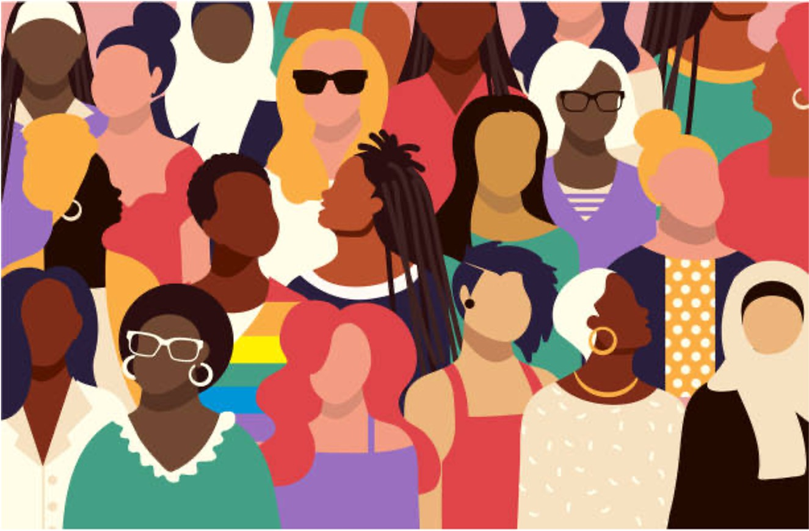
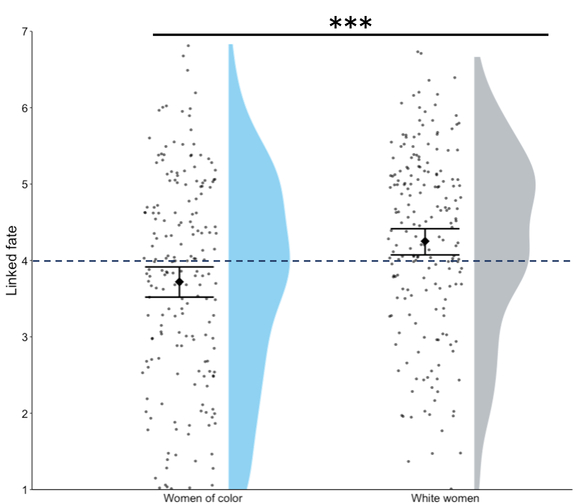
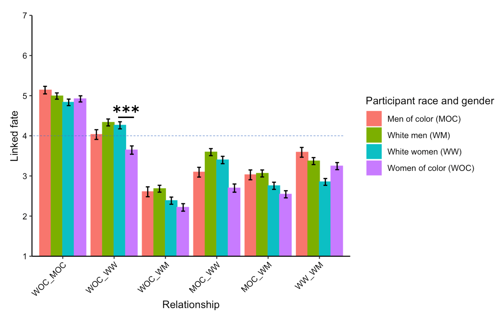
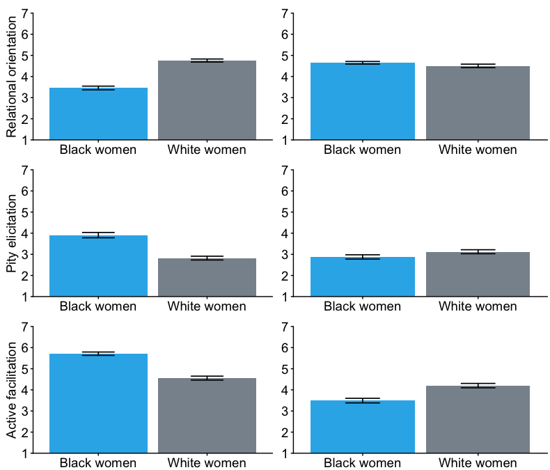
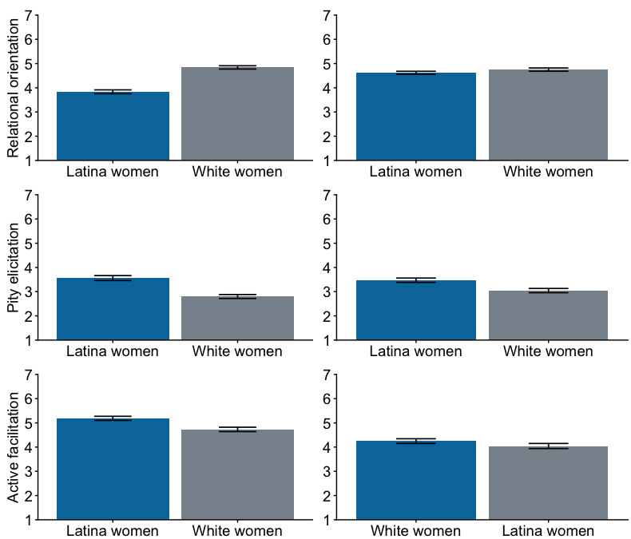
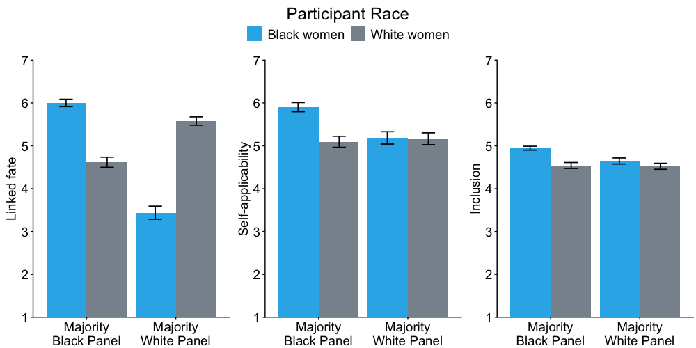
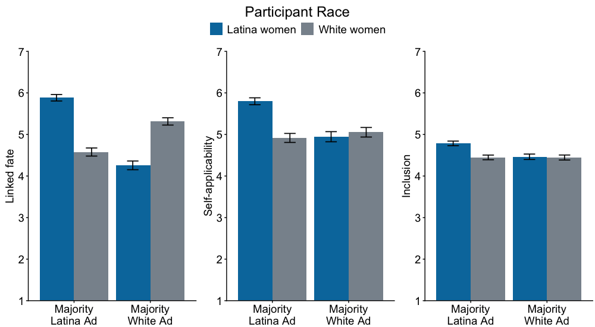
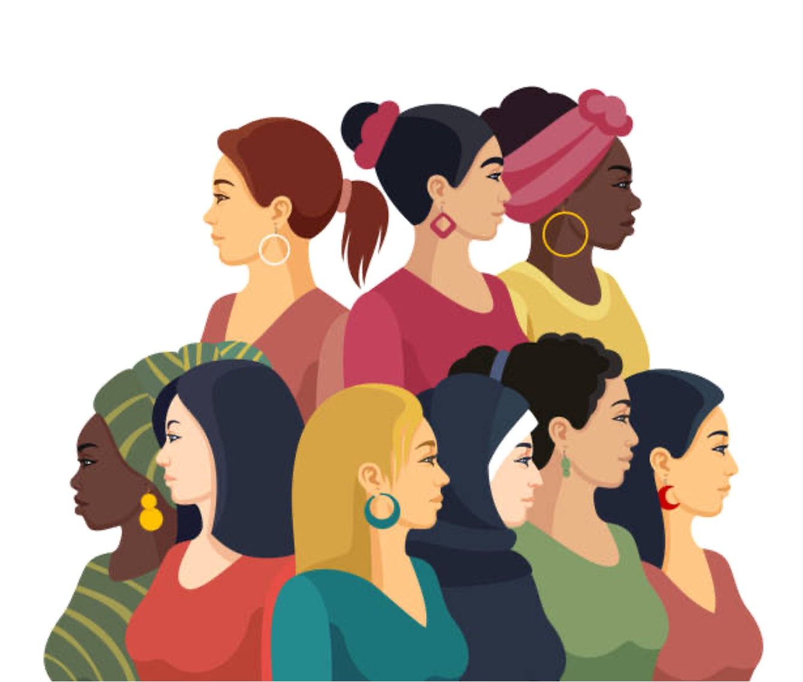

The problem

Workplace gender-equality initiatives are often framed as supporting “women.” But women do not experience gender as a uniform category. Race shapes women’s workplace experiences, and that means gender-focused initiatives may feel more or less self-applicable depending on who is represented, whose experiences are centered, and whether women perceive their outcomes as connected across racial lines.
This project examines linked fate as a psychological foundation for workplace solidarity: the extent to which people see their outcomes, experiences, and advancement as tied to another group’s. Prior linked fate research often focuses on within-group or single-identity dynamics; this project extends that logic to an intersectional workplace relationship across race and gender (Dawson, 1994; Ho et al., 2017; Lorde, 1984; Nkomo & Bell, 2000).
Executive summary
Solidarity was asymmetric
Across studies, White women generally perceived stronger linked fate with women of color than women of color perceived with White women.
Support perceptions mattered
Differences in linked fate were partly explained by whether White women were seen as supportive rather than competitive toward women of color.
Workplace treatment mattered too
Perceptions of how White women are treated by people with power and status in organizations also helped explain linked fate differences.
Representation shaped relevance
Black and Latina women viewed gender-equality programming as more self-applicable and inclusive when it featured mostly women from their own racial group rather than mostly White women.
Study roadmap
The five studies build from diagnosis to explanation to consequence. Study 1 establishes whether linked fate is symmetric across race and gender. Studies 2a and 2b examine what explains those perceptions. Studies 3a and 3b test whether linked fate shapes reactions to gender-equality programming.
Study 1
Establish the gap
Do White women and women of color perceive their fates as equally linked?
Studies 2a–2b
Explain the gap
Do perceived support, competition, and workplace treatment explain asymmetric linked fate?
Studies 3a–3b
Test consequences
Does linked fate shape whether gender-equality programming feels self-applicable and inclusive?
Study 1
Shared gender did not imply symmetric linked fate
Study 1 tested whether White women and women of color perceived linked fate between their groups in the same way, while also including White men and men of color as comparison groups.
Participants rated the perceived linked fate between different race-gender groups in the workplace. The focal comparison was whether women of color perceived linked fate with White women to the same extent that White women perceived linked fate with women of color.
Example linked fate items
Participants responded to items such as: “Career progress for one group also means career progress for the other group,” “Workplace issues that affect one group also affect the other group,” and “[Group 1] and [Group 2] have encountered similar discrimination in the past.” These items draw on linked fate and perceived bias-similarity approaches (Ho et al., 2017; Lewis et al., 2023).
Finding
Women of color rated their linked fate with White women lower than White women rated their linked fate with women of color: MWOC = 3.74, SD = 1.38; MWW = 4.25, SD = 1.22; t = -4.04, p < .001, d = 0.54. The group means also fell on opposite sides of the midpoint, suggesting more than a relative difference.

Study 1 focal comparison. Women of color reported lower linked fate with White women than White women reported with women of color, with group averages falling on opposite sides of the scale midpoint.
Show broader race-gender comparison

Broader comparison. The full set of race-gender linked fate ratings provides context for the focal asymmetry between White women and women of color.
Studies 2a–2b
Solidarity depended on perceived support and workplace treatment
Studies 2a and 2b examined what explains asymmetric linked fate perceptions. Study 2a focused on Black and White women; Study 2b focused on Latina and White women.
These studies measured linked fate along with perceptions of how White women and women of color treat one another at work, including perceived support and competition. They also measured perceptions of how each group is treated by powerful others in organizations, including pity elicitation and active facilitation.
Example relational orientation items
Participants rated items such as whether White women “act competitively with” Black/Latina women, “act cooperatively with” Black/Latina women, and “really care about” Black/Latina women’s well-being at work. These measures capture whether the relationship is perceived as supportive versus competitive.
Example third-party treatment items
Participants considered people high in power and status in organizations and rated whether those actors feel “pity” or “sympathy” toward each group and whether they “assist,” “help,” “protect,” or “defend” each group. These items adapt the warmth/competence BIAS map logic to workplace treatment perceptions (Cuddy et al., 2007).
Study 2a: Black and White women
Finding
Black women perceived lower linked fate with White women than White women perceived with Black women: MBW = 3.34, SD = 1.25; MWW = 4.46, SD = 1.05; t(408) = -9.87, p < .001, d = 0.97. Black women also perceived White women as less relationally oriented toward Black women than White women perceived themselves to be: t(408) = -11.56, p < .001, d = 1.14.

Study 2a mediator patterns. Black and White women differed in perceptions of White women’s relational orientation and how White women were treated by powerful others in the workplace.
Study 2a mediation model. The model examines whether perceptions of intergroup treatment and treatment by powerful others explain differences in linked fate between Black and White women.
Show Study 2a indirect effects table
| Mediator | b | SE | 95% CI | Takeaway |
|---|---|---|---|---|
| White women’s relational orientation | -0.19 | 0.09 | [-0.37, -0.03] | Significant indirect effect |
| Black women’s relational orientation | 0.02 | 0.02 | [-0.01, 0.05] | Not significant |
| White women’s pity elicitation | 0.10 | 0.04 | [0.01, 0.19] | Significant indirect effect |
| Black women’s pity elicitation | -0.004 | 0.01 | [-0.04, 0.02] | Not significant |
| Active facilitation of White women | -0.24 | 0.07 | [-0.38, -0.11] | Significant indirect effect |
| Active facilitation of Black women | -0.10 | 0.04 | [-0.19, -0.03] | Significant indirect effect |
Note. Indirect effects were estimated using parallel mediation with 10,000 bootstrap samples.
Study 2b: Latina and White women
Finding
Latina women perceived lower linked fate with White women than White women perceived with Latina women: MLW = 4.12, SD = 1.25; MWW = 4.52, SD = 1.14; t(434) = -3.52, p < .001, d = -0.34. Latina women also perceived White women as less relationally oriented toward Latina women than White women perceived themselves to be: t(434) = -9.62, p < .001, d = -0.92.

Study 2b mediator patterns. Latina and White women differed in perceptions of White women’s relational orientation and some third-party treatment perceptions.
Study 2b mediation model. The model tests whether perceptions of support, competition, and workplace treatment explain linked fate differences between Latina and White women.
Show Study 2b indirect effects table
| Mediator | b | SE | 95% CI | Takeaway |
|---|---|---|---|---|
| White women’s relational orientation | -0.20 | 0.09 | [-0.39, -0.02] | Significant indirect effect |
| Latina women’s relational orientation | < 0.01 | 0.01 | [-0.03, 0.04] | Not significant |
| White women’s pity elicitation | 0.02 | 0.05 | [-0.07, 0.11] | Not significant |
| Latina women’s pity elicitation | -0.001 | 0.03 | [-0.05, 0.06] | Not significant |
| Active facilitation of White women | -0.09 | 0.05 | [-0.18, -0.02] | Significant indirect effect |
| Active facilitation of Latina women | -0.10 | 0.03 | [-0.12, -0.01] | Significant indirect effect |
Note. Indirect effects were estimated using parallel mediation with 10,000 bootstrap samples. Double-check the active facilitation of Latina women indirect effect against the final R output before finalizing the page.
Studies 3a–3b
Representation shaped whether gender-equality programming felt applicable
Studies 3a and 3b tested whether linked fate shapes reactions to organizational initiatives. Participants viewed a gender-equality workshop advertisement that featured either mostly White women or mostly Black/Latina women.
The workshop was framed as addressing women’s workplace issues, including topics such as breaking the glass ceiling, balancing work and family, and navigating male-dominated cultures. The key manipulation was who was visually centered as the panelists.
Example linked fate items
Participants rated items such as “Workplace issues that affect me also affect [White/Black/Latina] women” and “Career progress for [White/Black/Latina] women will also mean career progress for people like me.”
Example initiative evaluation items
Self-applicability items included “I feel this workshop was intended for people like me.” Inclusion items included “I would fit in well with other women attending this workshop” and reverse-coded belonging items adapted from identity-safety and belonging work (Aaker et al., 2000; Cheryan et al., 2009).
Example workshop condition: majority White women panelists with one Black woman panelist.
Example workshop condition: majority Black women panelists with one White woman panelist.
Example workshop condition: majority White women panelists with one Latina woman panelist.
Example workshop condition: majority Latina women panelists with one White woman panelist.
Study 3a: Black and White women
Finding
Black women rated the majority-Black workshop as more self-applicable than the majority-White workshop: M = 5.90 vs. 5.09; t(466) = 3.56, p = .002, d = 0.50. They also rated it as more inclusive: M = 4.95 vs. 4.65; t(466) = 2.94, p = .018, d = 0.30. White women’s evaluations did not significantly differ by panel composition.

Study 3a outcomes. The plotted results show linked fate, self-applicability, and inclusion by participant race and workshop composition.
Show Study 3a statistical tables
| Effect | F | p | ηp² |
|---|---|---|---|
| Panel composition | 21.56 | < .001 | .03 |
| Participant race | 8.48 | .005 | .01 |
| Panel composition × participant race | 236.18 | < .001 | .32 |
| Effect | F | p | ηp² |
|---|---|---|---|
| Panel composition | 4.36 | .037 | .01 |
| Participant race | 10.18 | .002 | .02 |
| Panel composition × participant race | 8.76 | .003 | .02 |
| Effect | F | p | ηp² |
|---|---|---|---|
| Panel composition | 4.65 | .032 | .01 |
| Participant race | 15.80 | < .001 | .03 |
| Panel composition × participant race | 4.35 | .038 | .01 |
| Outcome | a path | b path | Indirect effect | 95% CI for indirect effect |
|---|---|---|---|---|
| Self-applicability | -1.18 | 0.46 | -0.54 | [-0.88, -0.33] |
| Inclusion | -1.18 | 0.18 | -0.21 | [-0.32, -0.11] |
Note. Mediation analyses used the cross-race workshop conditions: Black women viewing the majority-White panel and White women viewing the majority-Black panel. Participant race was coded 0 = White women, 1 = Black women.
Study 3b: Latina and White women
Finding
Latina women rated the majority-Latina workshop as more self-applicable than the majority-White workshop: M = 5.80 vs. 4.94; t(621) = 5.34, p < .001, d = 0.63. They also rated it as more inclusive: M = 4.78 vs. 4.46; t(621) = 3.70, p = .001, d = 0.45. White women’s evaluations again did not significantly differ by panel composition.

Study 3b outcomes. The plotted results show linked fate, self-applicability, and inclusion by participant race and workshop composition.
Show Study 3b statistical tables
| Effect | F | p | ηp² |
|---|---|---|---|
| Panel composition | 15.71 | < .001 | .02 |
| Participant race | 1.34 | .248 | .00 |
| Panel composition × participant race | 161.08 | < .001 | .20 |
| Effect | F | p | ηp² |
|---|---|---|---|
| Panel composition | 8.91 | .003 | .01 |
| Participant race | 12.08 | < .001 | .02 |
| Panel composition × participant race | 20.44 | < .001 | .03 |
| Effect | F | p | ηp² |
|---|---|---|---|
| Panel composition | 6.52 | .011 | .01 |
| Participant race | 8.58 | .004 | .01 |
| Panel composition × participant race | 7.14 | .008 | .01 |
| Outcome | a path | b path | Indirect effect | 95% CI for indirect effect |
|---|---|---|---|---|
| Self-applicability | -0.32 | 0.46 | -0.15 | [-0.30, -0.02] |
| Inclusion | -0.32 | 0.24 | -0.08 | [-0.16, -0.01] |
Note. Mediation analyses used the cross-race workshop conditions: Latina women viewing the majority-White panel and White women viewing the majority-Latina panel. Participant race was coded 0 = White women, 1 = Latina women.
What this means for workplace programs

The studies suggest that gender-equality initiatives may not feel equally applicable to all women simply because they are framed around gender. When initiatives visibly center White women, Black and Latina women may be less likely to see those initiatives as reflecting their own workplace experiences.
In contrast, White women appeared less sensitive to the racial composition of the initiative. This pattern is consistent with the broader linked fate asymmetry: White women may be more likely to treat “women’s” programming as relevant across racial lines, whereas women of color may be more attentive to whether the initiative actually centers their experiences.
Applied takeaway: Workplace inclusion programs should not assume that shared gender automatically produces shared relevance. Representation, perceived support, and perceived linked fate shape whether people see an initiative as meant for them.
Affinity groups and identity-centered programming may be one way organizations already recognize that broad category labels can obscure different experiences. Open affinity groups visual. If this file does not open, convert lf-affinity-groups.pdf to a PNG and update this link to an image path.
Reflections & tradeoffs
- Linked fate is useful because it captures perceived shared outcomes. For this portfolio page, I frame linked fate as a foundation for solidarity and willingness to work together, but the construct is more specific than general liking or warmth.
- The five-study structure creates a stronger arc, but also more complexity. Study 1 establishes the asymmetry, Studies 2a–2b examine explanatory pathways, and Studies 3a–3b test consequences. The page therefore highlights the central results and links to technical appendices for fuller details.
- The Black/White and Latina/White comparisons were similar, but not identical. Some effects replicated closely, while others were attenuated or operated through fewer pathways. I treat those differences as theoretically informative rather than forcing a single simplified pattern.
- Public-facing interpretation requires balancing theory and application. The academic paper focuses on linked fate and intersectionality. The portfolio version emphasizes how perceptions of solidarity affect whether workplace initiatives feel inclusive and self-relevant.
Learnings
This project demonstrates how I connect theory, research design, and applied organizational questions. Across five studies, I use survey experiments, mediation models, post hoc comparisons, and visual communication to examine when solidarity emerges, when it breaks down, and how those perceptions shape reactions to workplace inclusion efforts.